1الوصول إلى بوابتك
من موقع المركز اضغط «البوابات» واختر «بوابة المتدرب». ولولي الأمر بوابة مستقلة يتابع منها ابنه.
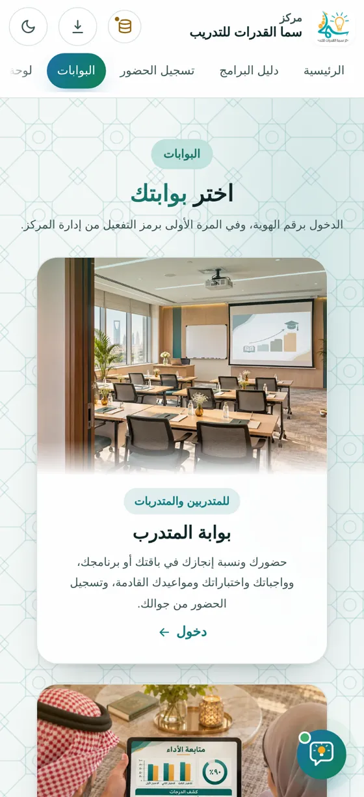
2الدخول أول مرة وعلى جهاز جديد
- اكتب رقم هويتك (السجل المدني).
- أول مرة: اكتب رمز التفعيل الذي تعطيك إياه إدارة المركز ثم «دخول». يُعتمد جوالك وتبقى داخلًا فلا تحتاج الرمز كل مرة.
- جهاز جديد: اضغط «إرسال رمز التحقق»؛ يصل الرمز إلى صندوق الرسائل في جوالك المعتمد، أو اطلبه من إدارة المركز بذكر رمز الجهاز الظاهر لك.
- اضغط زر التحميل في أعلى الصفحة لتثبيت البوابة كتطبيق على جوالك.
صور هذا الدليل من النسخة التجريبية ببيانات وهمية، والرمز 1234 فيها للتجربة فقط.
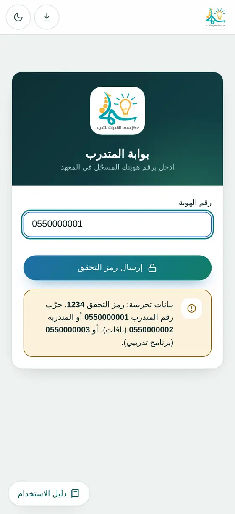
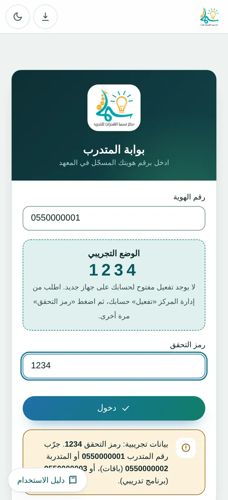
3شاشة الترحيب وتسجيل الحضور من التطبيق
عند فتح بوابتك أول مرة في اليوم، وكلما كانت جلستك مفتوحة ولم تسجّل حضورك، تظهر شاشة ترحيب فيها التاريخ والوقت وجلسة اليوم وحالتها.
- إن كانت جلستك مفتوحة للتسجيل اضغط «تسجيل الحضور»، فيُسجَّل حضورك دون كتابة سجلك المدني، لأن جوالك المعتمد يعرّفك.
- إن طُلب «رمز اليوم» فاكتبه من شاشة القاعة.
- إن لم يُفتح التسجيل بعد تعرض لك الشاشة وقت فتحه، وإن لم تكن لك جلسة اليوم تعرض جلستك القادمة.
- «الدخول إلى لوحتي» يغلق الشاشة. وما دامت الجلسة مفتوحة يبقى زر «تسجيل الحضور» في أعلى «لوحتي».
يُسجَّل الحضور مرة واحدة في اليوم، سواء من التطبيق أو من الباركود.
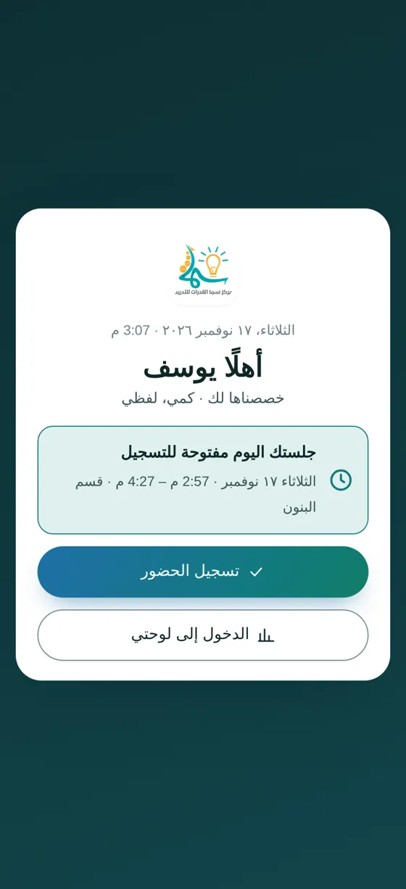
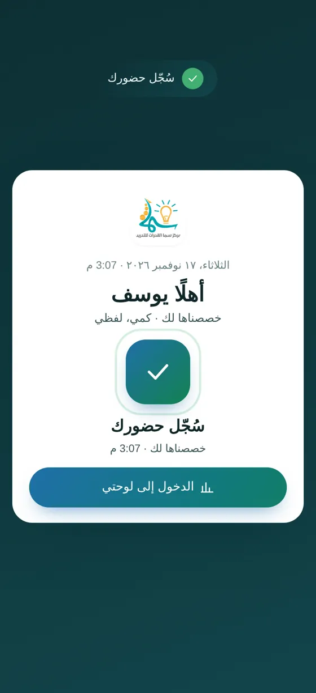
4تسجيل الحضور بالباركود (بديل)
- امسح الباركود المعلّق في القاعة بكاميرا جوالك.
- اكتب رقم سجلك المدني واضغط «تسجيل الحضور».
- يتعرف النظام على جلستك الآن ويسجّل حضورك أو تأخرك. إن كان لك أكثر من جلسة في الوقت نفسه يطلب منك الاختيار.
يُسجَّل الحضور مرة واحدة في اليوم. وحضور القدرات والتحصيلي يومي: يوم القسم يضم المقررين ويُحتسب حضورًا واحدًا.
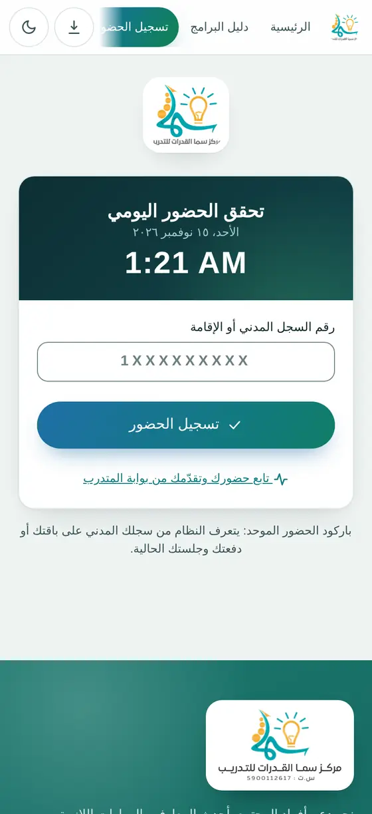
5لوحتي
في الأعلى جلستك القادمة. وتحتها مؤشر الأداء العام: متوسط الحضور وأداء الواجبات والمؤقت الزمني، أحمر دون 50، وأصفر حتى حد الشهادة، وأخضر بعده.
ثم نسبة الإنجاز (أيام الحضور من جلسات الباقة، والواجبات المحلولة من المرسلة)، والحضور بعدد الحضور والتأخر والغياب، وأداء الواجبات، و«مدربو مقرراتي» بنبذتهم وروابط قنواتهم، وطلب الشراء وحالة السداد.
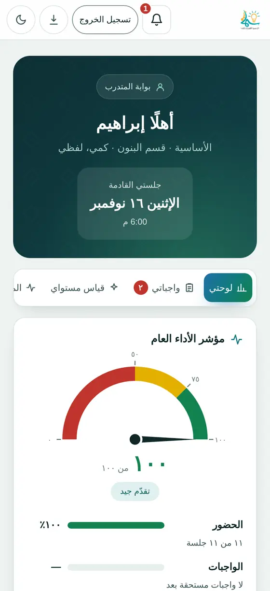
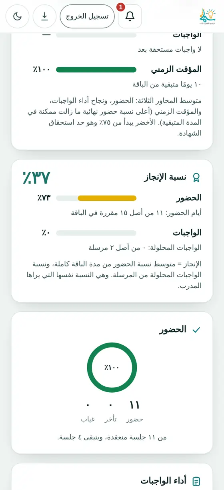
6واجباتي
- الرقم الأحمر على التبويب = واجبات جديدة أو تحتاج تعديلًا.
- في الواجب الكتابي اكتب إجابتك ثم «إرسال»، أو «حفظ مسودة» لتكمل لاحقًا.
- في الاختبار اضغط «ابدأ»: يُفتح مرة واحدة بوقت دقيقتين لكل سؤال، وتُحفظ إجاباتك أولًا بأول، ويُصحَّح عند التسليم أو انتهاء الوقت.
- بعد التصحيح ترى درجتك، والإجابات الصحيحة حين يسمح المدرب.
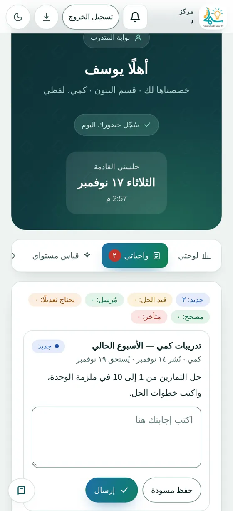
7قياس مستواي
اختبار تدريبي تختاره بنفسك: المقرر والوحدة وعدد الأسئلة ثم «ابدأ الاختبار». الأسئلة من بنك مدرب مقررك، وتظهر نتائجك في «محاولاتي».
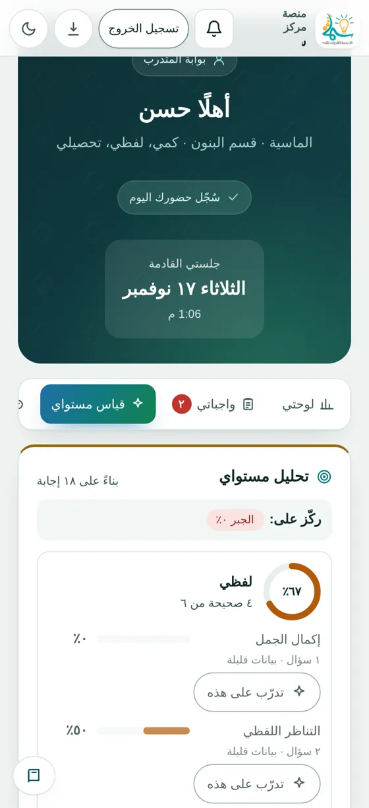
8المراسلة وتقييم المدرب
المراسلة: اختر مدرب المقرر واكتب رسالتك.
تقييم المدرب: بعد 3 أيام حضور يمكنك تقييم مدربك مرة كل شهر (وضوح الشرح، التفاعل، الالتزام، فائدة التدريبات) مع تعليق اختياري. يصل التقييم للمدرب مجمّعًا دون اسمك.
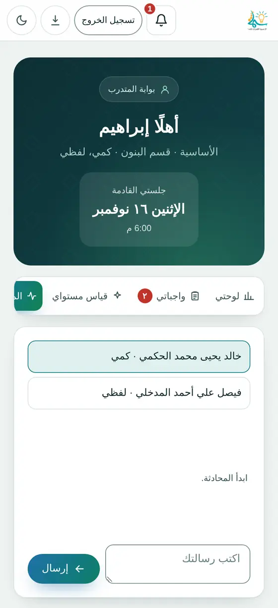
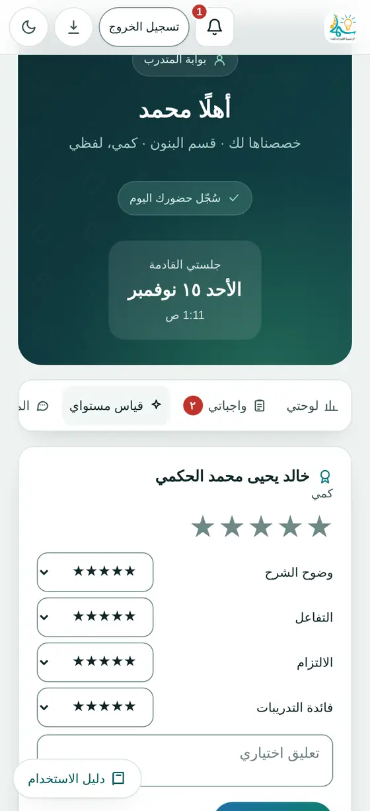
9الإشعارات والسداد والشهادة
- الجرس: تذكير قبل الجلسة، والواجبات الجديدة، ورسائل الإدارة والمدرب، ورموز الدخول لجهاز جديد.
- طلب الشراء: في «لوحتي» ترى رقم طلبك والمطلوب والمدفوع والمتبقي. إن حوّلت المبلغ اضغط «حوّلت المبلغ؟ أبلغنا بالتحويل» واكتب المبلغ والمرجع؛ تؤكده الإدارة بعد مطابقة كشف البنك.
- الشهادة المعتمدة: تصدرها منصة منار (mnar.sa)، فأنشئ حسابك فيها. ووثيقة المنصة «إفادة حضور».
- بياناتك: لتصحيح الاسم أو الجوال تواصل مع إدارة المركز عبر واتساب.